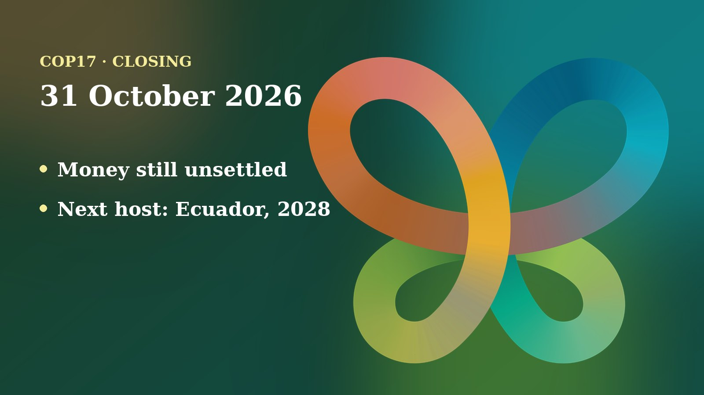

I was in Yerevan for COP17, in person, from the first day to the last, and I am writing this the way I lived it: tired, grateful and still thinking about the room. The 17th UN Biodiversity Conference was meant to end on Friday 30 October. It ended on Saturday 31 October, after a final plenary of nearly 12 hours. In that time delegates adopted the first global review of the nature pact, a plan called the Yerevan Pathway, and about 50 decisions in all. They did not settle the hardest question, who pays for nature. This is my account of the day, the plenary, the decisions, a fair verdict, and the feelings that came with it.
The last day, as I lived it
Closing day did not feel like a finish line. It felt like a long Friday that kept being extended. On my own calendar there were my usual commitments: a shift at the Armenia Tree Project booth in the morning, the PechaKucha storytelling session “BAZMAZAN: Living Armenia” on the Green Zone main stage in the afternoon, and another booth shift in the evening. Meanwhile the negotiators were inside the plenary, working through what was left. By the afternoon, Armenpress reported that the final formal plenary sessions were under way, and COP17 President Hambardzum Matevosyan, Armenia’s Environment Minister, wrote that parties needed a willingness to compromise.
Then the night began. Talks were due to end on Friday and ran about 24 hours longer, according to Premium Times. Matevosyan told reporters afterwards that he had kept the plenary going late on purpose, using team consultations and parallel talks, and that he saw it as his responsibility (Armenpress). He also said that participants had barely slept for two weeks, and that most delegation members had not slept at all in the final days.
I will be plain about my sources. The venue was full of people who had given everything, but for the order of events in the plenary below I rely on the detailed reporting of Carbon Brief and Climate Home News, and I name them as I go.
Inside the final plenary, step by step
1. The global review. According to Carbon Brief, the presidency’s proposals had cleared the last 28 bracketed phrases (the marks that show words countries cannot yet agree on), and the review was swiftly signed off at the start of the final plenary on 30 October. There was just one late addition. Brazil asked to mention people of African descent in paragraph 35, Colombia backed it, and the President accepted. The text notes “with deep concern” that the 23 targets for 2030 will not be achieved unless action speeds up, and paragraph 15 urges faster implementation, “including by increased ambition”, wording some developing countries had been wary of.
2. Indigenous peoples and local communities. Next came the rules for the new permanent body on Article 8(j), the part of the convention about Indigenous peoples and local communities. Countries were still split on who sits in the “friends of the bureau” and how the co-chairs of subsidiary bodies rotate. Speaking for the African Group, the Democratic Republic of the Congo said failure would be a “failure of COP17” and warned the plenary could lose its quorum in “30 minutes” (Carbon Brief). The rules were agreed after overtime. The CBD calls them the Sevan Guidelines (CBD Secretariat).
3. Money. The resource mobilisation text was welcomed, but a warning followed. China, Saudi Arabia, Switzerland and Fiji cautioned against reopening it, and Brazil put it most sharply: “If we open this text, we will never close it again” (Carbon Brief). The package kept a post-2030 financial mechanism “in principle” and left its shape, a new fund or existing arrangements, to COP18.
4. Climate and nature. Voluntary guidelines on nature-based solutions were agreed. References to the International Court of Justice’s advisory opinion on climate change were removed after objections from Russia, Saudi Arabia and India. Russia’s position late in the night was that it was “just not willing to move on that, particularly at this time of night” (Carbon Brief).
5. The oceans. The marine text “takes note of” the high seas treaty’s entry into force instead of welcoming it, after Russian objections. Mentions of Indigenous peoples, local communities, women and youth that had been in brackets were removed, except one. A Chilean delegate said, “We are erasing with our elbow what we have just written”, and the room applauded for a long time (Carbon Brief).
6. Reporting and review. An EU compromise asked the subsidiary bodies for recommendations on a “party-driven way forward” after 2030, and an expert group was set up to make the monitoring framework work (Carbon Brief).
7. Genetic data and the Cali Fund. The last item came around 5 a.m. The President’s text on digital sequence information, the genetic data held in global databases, was adopted at 5:25 a.m. on 31 October without objection, to applause (Carbon Brief). Then, early that morning, countries chose the next host: according to AFP, as published by Kuwait Times, Ecuador beat Panama in a secret ballot, and COP18 will take place there in 2028.
The decisions that will be remembered
None of the reports I read use the word “historic”, and I will not put it in anyone’s mouth. But these are the decisions that, in my reading, COP17 will be remembered for:
- The first global review. For the first time, the world stopped to check honestly how it is doing against the 2030 nature targets. The UN report behind it found the world is falling behind on 22 of the 23 targets (Carbon Brief). Its answer is the Yerevan Pathway, which sets no new targets but focuses on reaching the existing ones: more ambition, wider coverage of national targets, more support, wider engagement and better monitoring (Xinhua).
- A permanent seat for Indigenous peoples. The Sevan Guidelines set the working rules of the new permanent subsidiary body on Article 8(j), strengthening the role of Indigenous peoples and local communities in global biodiversity policy (CBD Secretariat).
- A wider circle of donors, for the first time. Climate Home News reports that large emerging economies were invited, for the first time, to take on donor responsibilities. It is voluntary. Countries can “signal interest”, and Carbon Brief says nobody is added without their consent.
- Harmful subsidies in the spotlight. Subsidies that damage nature came out of the shadows. The sources describe the wording differently: Carbon Brief reads paragraph 26 as “encourages” reform “in accordance with national circumstances”, while Climate Home News says countries agreed to “accelerate” it. Either way, the presidency launched the Yerevan Call on positive incentives, and a “Friends of Target 18” group began under Colombia and Finland.
- Rules for the Cali Fund. The fund for sharing the benefits of genetic data now has rules: half of what it pays out goes to the self-identified needs of Indigenous peoples and local communities, and companies earn a Cali Fund certificate only by paying at the agreed rates, 0.1% of revenue or 1% of profit (Carbon Brief).
- Nearly $2 billion in new money. The CBD lists $560 million through the ninth replenishment of the Global Environment Facility, $500 million through the Species Recovery Alliance and more than $330 million through the Value Nature Fund (CBD Secretariat).

What was left on the table
Money. Developed countries missed the goal of $20 billion a year for nature by 2025 (Carbon Brief). The compromise on widening the donor base was hard won and thin. The EU called the progress “timid”, Saudi Arabia said it had expected “a lot less”, and Switzerland’s lead negotiator Gabriela Blatter said that “if we’re mutually unhappy, it’s probably the closest we can get” (Climate Home News).
The Cali Fund is nearly empty. According to Carbon Brief, pledges totalled $10,565 by the end, with less than $9,000 deposited, and no large company that relies on genetic data had paid. Some technical details were pushed to COP18, so Siva Thambisetty of the London School of Economics described the fund as “on life support”.
Other items were deferred for lack of time, including cooperation with other conventions and the global benefit-sharing mechanism under the Nagoya Protocol (Down To Earth).
How successful was COP17?
I would split the answer in two: a success of process, and a partial success of substance.
- Process: a clear success. Carbon Brief notes that, unlike COP16, countries signed off all major negotiating texts. About 50 decisions were adopted, which Matevosyan called an excellent result: “we achieved far more than we could have expected” (Armenpress). UNEP’s Inger Andersen said that in Yerevan “we saw environmental multilateralism prevail once again” (CBD Secretariat).
- Substance: real but short of the need. Steven Guilbeault, who helped broker the global framework, called the package “an important step forward” that “falls short of what is needed” (Climate Home News). The Wildlife Conservation Society said the final text largely reused existing language and was weak on ambition (Premium Times), and WWF’s Guido Broekhoven warned that “every diluted clause, every deferred target, is a step towards irreversible loss” (Xinhua).
- Finance: unfinished. WWF’s Daudi Sumba feared finance “will remain the key issue” haunting these summits, and the Pacific Islands group said delegates were leaving with “realities not reflected in the official text” (Climate Home News).
- Credit to the host. Executive Secretary Astrid Schomaker praised the results “at a moment when multilateralism is supposedly not functioning” (Carbon Brief). Armenia hosted two weeks of talks and held a deal together overnight.
My verdict: COP17 kept the process alive and made the problem impossible to ignore. It did not yet change the money or the pace. Whether it succeeded will be decided in the national plans and budgets of the next four years, and at COP18, which Down To Earth calls the last checkpoint on progress toward 2030.
Numbers to know
- About 12 hours: the length of the final plenary (Carbon Brief).
- About 50: decisions adopted (Armenpress).
- 22 of 23: the 2030 targets the world is falling behind on, per the UN report (Carbon Brief).
- $20 billion a year: the nature finance goal for 2025 that developed countries missed (Carbon Brief).
- $10,565: total Cali Fund pledges by the end of the conference (Carbon Brief).
- Nearly $2 billion: new commitments announced at COP17 (CBD Secretariat).
- 5:25 a.m.: when the last decision was adopted, on 31 October (Carbon Brief).
Through a child and youth lens
I came to COP17 as a member of the UNICEF Global Delegation, and I advocate for including children and young people in the CBD process. My programme there included the Child and Youth Dialogue with the COP17 President on 21 October, and sessions with the Global Youth Biodiversity Network on 27 and 29 October. So I read the closing texts with one question: where are young people in them?
The honest answer is mixed. The Yerevan Pathway pushes wider engagement of governments and societies, and the CBD Secretariat names a new emphasis on biodiversity education. But the reporting shows that in the marine text, mentions of Indigenous peoples, local communities, women and youth were removed except one (Carbon Brief), and Xiomara Acevedo of Barranquilla+20 called that concerning because the language had already been agreed. I could not read the final decision texts myself, so I cannot say how children and youth appear in every one of them.
What I am sure of is the stake. A world that is off track on 22 of 23 targets, and short of the money to change that, is a world handed over to today’s children with the bill attached. That is why subsidy reform, finance and monitoring are children’s issues, not only technical ones.
How it felt
I felt relief when the last text passed. I felt pride, because this was Armenia’s moment, and the country I love held a global negotiation together through a night when it could have fallen apart. I felt frustration too, because $10,565 in a fund meant for billions is not a number you forget, and a text that only “encourages” is not what children are waiting for.
Mostly I felt the exhaustion that the President described, and underneath it something steadier: gratitude for the young people, Indigenous leaders, scientists and delegates who kept showing up long after sleep would have been the sensible choice. In the final hours, the room cheered and applauded more than once. That is what hope looks like in a negotiation. It is tired, it is stubborn, and it claps at five in the morning.
What comes next
- The published texts: the final decisions and the Earth Negotiations Bulletin summary, which I will read line by line for children and youth.
- National plans: more than 60 countries had not yet submitted one, and the decision urges them to finish “as soon as possible” (Climate Home News).
- Money: who signals interest as a donor, and whether the Cali Fund fills before COP18 in Ecuador in 2028.
- Analysis: the SEI discussion on COP17 on 5 November.
CBD Executive Secretary Astrid Schomaker gave the closing test for all of us who care about this process:
The test is not what governments agreed in Yerevan, but what they change when they return home.
Follow where I am each day on my COP17 schedule, and the daily news in the Newsroom.
Sources
- COP17: Key outcomes agreed at the UN biodiversity conference in Yerevan (Carbon Brief, 31 Oct 2026). https://www.carbonbrief.org/cop17-key-outcomes-agreed-at-the-un-biodiversity-conference-in-yerevan
- COP17 delivers fragile deal to boost conservation and funding for nature (Climate Home News, 31 Oct 2026). https://www.climatechangenews.com/2026/10/31/cop17-delivers-fragile-deal-scaling-up-biodiversity-conservation-armenia-cbd/
- UN Biodiversity Conference charts Yerevan Pathway to accelerate global action for nature (CBD Secretariat, 31 Oct 2026). https://www.cbd.int/article/cop-17-closes
- COP17 adopts around 50 decisions as outcomes exceed expectations (Armenpress, 31 Oct 2026). https://armenpress.am/en/article/1264392
- Yerevan Pathway adopted at COP17 to accelerate biodiversity conservation action (Armenpress, 31 Oct 2026). https://armenpress.am/en/article/1264395
- COP17 final formal plenary sessions underway (Armenpress, 30 Oct 2026). https://armenpress.am/en/article/1264324
- Nations agree to get UN nature goals back on track (AFP, via Kuwait Times, 31 Oct 2026). https://kuwaittimes.com/article/52707/world/nations-agree-to-get-un-nature-goals-back-on-track/
- CBD COP17: Parties adopt Yerevan Pathway as biodiversity talks end amid criticism (Premium Times, 31 Oct 2026). https://www.premiumtimesng.com/news/top-news/921788-cbd-cop17-parties-adopt-yerevan-pathway-as-biodiversity-talks-end-amid-criticism.html
- World Insights: Yerevan Pathway charts course for biodiversity action, but challenges remain (Xinhua, 1 Nov 2026). https://english.news.cn/20261101/a2eed070e5ba46cea8798b4a48c6c94a/c.html
- Yerevan Pathway: COP17 ends with decisions on 50 agenda items (Down To Earth, 1 Nov 2026). https://www.downtoearth.org.in/wildlife-biodiversity/yerevan-pathway-cop17-ends-with-decisions-on-50-agenda-items